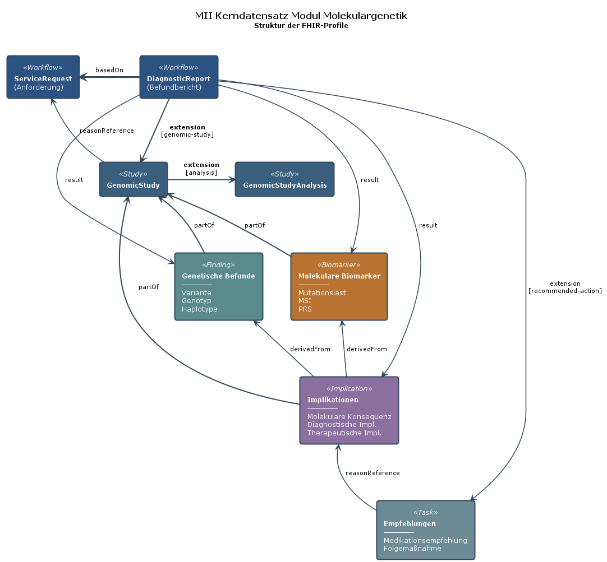

MII Implementierungsleitfaden Kerndatensatz-Modul Molekulargenetischer Befundbericht
2026.0.4 -

MII Implementierungsleitfaden Kerndatensatz-Modul Molekulargenetischer Befundbericht
2026.0.4 -

MII IG Kerndatensatz-Modul Molekulargenetischer Befundbericht - Local Development build (v2026.0.4) built by the FHIR (HL7® FHIR® Standard) Build Tools. See the Directory of published versions
Diese Seite listet die FHIR-Profile des Moduls Molekulargenetischer Befundbericht
(Namenskonvention MII_PR_<Modul>_<Name>, siehe
docs/recipes/add-a-profile.md in diesem Repository sowie die
MII-Namenskonventionen). Die Extensions des Moduls stehen auf der Seite
Extensions.
Hinweise zur Verwendung der Elemente im Rahmen der Befundung von Varianten finden sich im Profil Genomics Report aus HL7 Genomics Reporting Implementation Guide.
Die folgende Tabelle zeigt die Vererbungsbeziehungen der Profile in diesem Modul:
| Profilname | Parent-Profil (STU3) | Beschreibung |
|---|---|---|
| MII_PR_MolGen_MolekulargenetischerBefundbericht | genomic-report | Hauptbefundbericht für genetische Analysen |
| MII_PR_MolGen_Variante | variant | Genetische Variante |
| MII_PR_MolGen_Genotyp | genotype | Genotyp-Information |
| MII_PR_MolGen_DiagnostischeImplikation | diagnostic-implication | Diagnostische Bedeutung |
| MII_PR_MolGen_TherapeutischeImplikation | therapeutic-implication | Therapeutische Bedeutung |
| MII_PR_MolGen_MolekulareKonsequenz | molecular-consequence | Molekulare Auswirkung |
| MII_PR_MolGen_Medikationsempfehlung | medication-recommendation | Medikationsempfehlung |
| MII_PR_MolGen_EmpfohleneFolgemassnahme | followup-recommendation | Empfohlene Folgemaßnahme |
| MII_PR_MolGen_GenomicStudy | genomic-study | Genomische Studie |
| MII_PR_MolGen_GenomicStudyAnalysis | genomic-study-analysis | Analyse der genomischen Studie |
| MII_PR_MolGen_Mikrosatelliteninstabilitaet | molecular-biomarker | MSI-Status |
| MII_PR_MolGen_Mutationslast | molecular-biomarker | Tumor-Mutationslast |
| Profilname | Parent-Ressource (FHIR R4) | Beschreibung |
|---|---|---|
| MII_PR_MolGen_AnforderungGenetischerTest | ServiceRequest | Anforderung für genetische Tests |
| MII_PR_MolGen_Familienanamnese | FamilyMemberHistory | Familienanamnese |
| MII_PR_MolGen_PolygenerRisikoScore | RiskAssessment | Polygener Risiko-Score |
Das folgende Diagramm visualisiert die Beziehungen zwischen den verschiedenen FHIR-Profilen im Modul:

Legende:
Der Workflow für molekulargenetische Analysen umfasst den gesamten Prozess von der Anforderung einer genetischen Untersuchung bis zur Erstellung des finalen Befundberichts.
ServiceRequest (Anforderung): Initiiert den diagnostischen Prozess mit spezifischen Fragestellungen und gewünschten Analysen.
DiagnosticReport (Befundbericht): Zentrale Ressource, die alle Ergebnisse, Interpretationen und Empfehlungen zusammenführt und strukturiert darstellt.
basedOnresultrecommended-action ExtensionGenetische Befunde dokumentieren die identifizierten genetischen Varianten und deren molekulare Eigenschaften. Diese Observation-basierten Profile bilden die faktische Grundlage für die molekulargenetische Diagnostik ohne interpretative Bewertungen.
Variante: Einzelne genetische Veränderung mit detaillierten molekularen Annotationen.
Genotyp: Kombination von Allelen an einem bestimmten Genlocus, wichtig für die Vererbungsanalyse.
Haplotyp: Gruppe von gekoppelten genetischen Varianten, die gemeinsam vererbt werden.
Sequence Phase Relationship: Beschreibt die Phasenbeziehung zwischen Varianten (cis/trans).
hasMember)partOfderivedFrom auf diese BefundeNicht in den Befunden enthalten:
Genetische Implikationen bewerten und interpretieren die identifizierten genetischen Befunde hinsichtlich ihrer klinischen Bedeutung. Diese Observation-Profile enthalten die medizinische Einordnung der Varianten.
Diagnostische Implikation: Bewertet die Bedeutung einer Variante für die Diagnosestellung und Krankheitsursache.
Therapeutische Implikation: Beschreibt die Auswirkungen auf Therapieentscheidungen und Medikamentenwahl.
Molekulare Konsequenz: Dokumentiert die funktionellen Auswirkungen auf Genprodukte (Proteine, RNA).
derivedFrom auf die zugrundeliegenden VariantenMolekulare Biomarker sind aggregierte genomische oder molekulare Messgrößen, die prognostische oder prädiktive Aussagen über Krankheitsverlauf und Therapieansprechen ermöglichen. Alle Biomarker-Profile erben vom Clinical Genomics STU3 Molecular Biomarker Profil.
Mikrosatelliteninstabilität (MSI): Marker für DNA-Mismatch-Reparatur-Defizienz, wichtig für Immuntherapie-Entscheidungen.
Mutationslast (TMB): Gesamtzahl somatischer Mutationen pro Megabase, Prädiktor für Checkpoint-Inhibitor-Ansprechen.
Polygener Risiko-Score (PRS): Kombinierte Bewertung multipler genetischer Varianten zur Risikostratifizierung (RiskAssessment-basiert).
Das Molecular Biomarker Profil ist flexibel erweiterbar und wird bereits für weitere Analysen genutzt:
molecular-biomarker ProfilpartOfresult eingebundenTherapieempfehlungen dokumentieren konkrete Handlungsanweisungen, die sich aus den genetischen Befunden ergeben. Diese Task-basierten Profile ermöglichen die strukturierte Weitergabe von Empfehlungen.
Medikationsempfehlung: Pharmakogenetisch begründete Empfehlungen zu Medikamentenwahl und -dosierung.
Empfohlene Folgemaßnahme: Weitere diagnostische oder präventive Maßnahmen basierend auf genetischen Befunden.
reasonReference auf die Implikationenrecommended-action ExtensionDie Methodik-Profile dokumentieren die technischen Details der durchgeführten genetischen Analysen, von der Probenverarbeitung bis zur bioinformatischen Auswertung.
GenomicStudy: Übergeordnete Studie, die alle Analysen zu einer Probe zusammenfasst (ersetzt UntersuchteRegion aus STU2, plus umfangreichere Methodikinformation und Workflow-IDs).
GenomicStudyAnalysis: Einzelne Analyseschritte innerhalb einer Studie (z.B. Library Prep, Sequenzierung, Bioinformatik).
UntersuchteRegion (alt) → GenomicStudy (neu)
partOf auf GenomicStudyDie Familienanamnese erfasst genetisch relevante Erkrankungen bei Blutsverwandten und ist essentiell für die Interpretation hereditärer Varianten und die Risikoeinschätzung.
FamilyMemberHistory: Dokumentiert Erkrankungen von Familienangehörigen mit detaillierten Verwandtschaftsinformationen.
Drei spezielle Extensions erweitern die Standardressource:
Details siehe Extensions
patient den IndexpatientenreasonReference auf genetische Befunde verweisenreasonReference für Testindikation genutzt